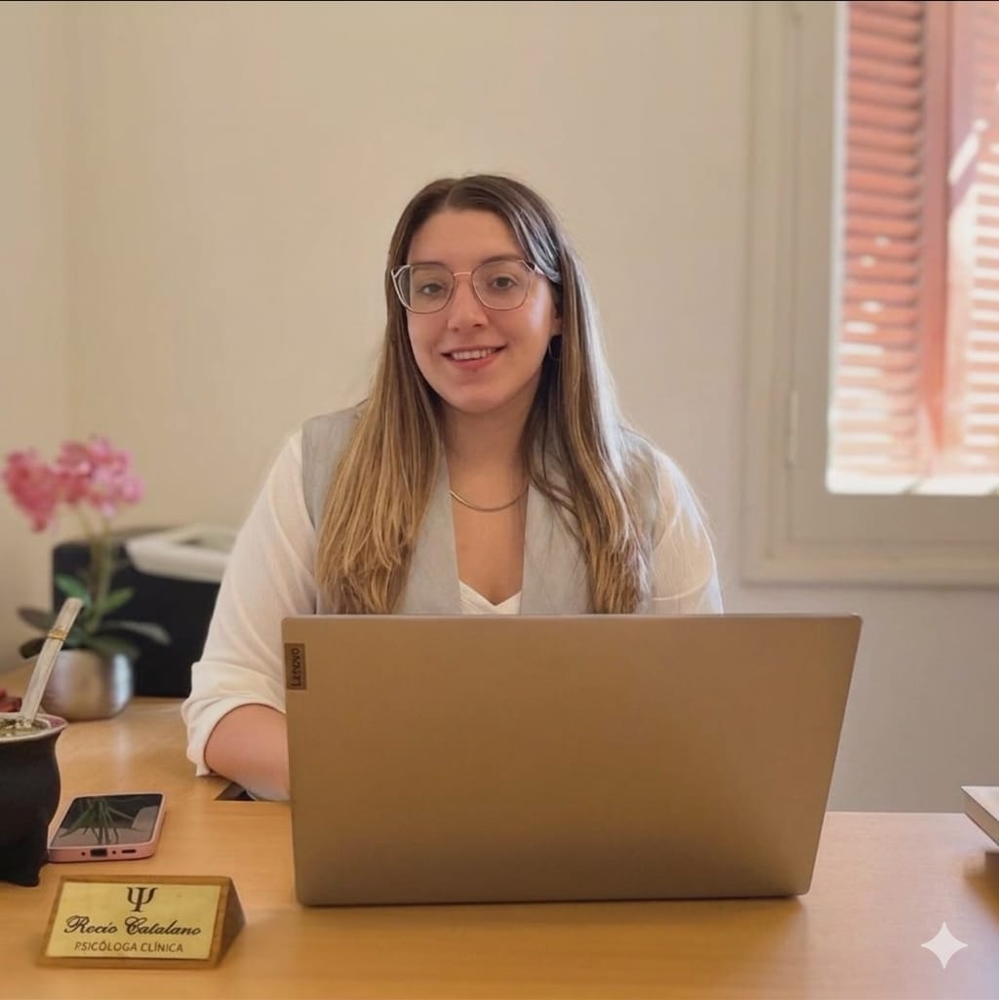

Psicóloga • MP: 2732 • Enfoque cognitivo conductual

La Lic. Rocío Catalano acompaña procesos desde la Terapia Cognitiva Conductual, un enfoque basado en la evidencia científica que propone un trabajo activo y orientado a resultados reales en tu vida cotidiana. Atención presencial en Choele Choel, Río Negro y modalidad virtual para todo el país.
Cada persona es única. Trabajamos juntos en lo que más te pesa, con herramientas concretas y acompañamiento real.
Acompañamiento terapéutico desde el enfoque cognitivo conductual. Un proceso activo, personalizado y orientado a resultados reales en tu vida cotidiana.
Evaluación psicológica para la obtención o renovación de licencia de conducir. Turnos disponibles de forma presencial y virtual.
Informe psicológico habilitante para portación y tenencia de armas. Evaluación profesional con la documentación requerida.
Evaluaciones psicotécnicas e informes para fines laborales y educativos. Atención personalizada con entrega de documentación oficial.
Un proceso de autoconocimiento para ayudarte a elegir tu camino académico o profesional con mayor seguridad y claridad.
Un primer encuentro para conocernos, entender tu motivo de consulta y definir juntos los objetivos terapéuticos que vamos a trabajar.
Un recurso práctico con herramientas concretas basadas en TCC para trabajar en tu bienestar desde casa. Ideal para empezar a poner en práctica lo que más necesitás.
Pago seguro vía Mercado Pago · Descarga inmediata
Pedir ayuda es un acto de valentía, no de debilidad. Rocio trabaja con un enfoque humano y profesional para que cada sesión sea un paso real hacia el bienestar que merecés.
El primer paso es el más importante. Escribime con total confianza y coordinamos tu primera consulta sin compromiso.
2984 38-1477
Choele Choel, Río Negro · También virtual
@psi.rociocatalano